~/python-brasil-2026
$ uv run palestra --tema temporal
Python + Temporal
O core de workflows modernos
Adilson Torres · Engenheiro de Software · DevOps · automação de redes
github.com/AdilsonTorres/python-temporal-core
PYTHON BRASIL 2026

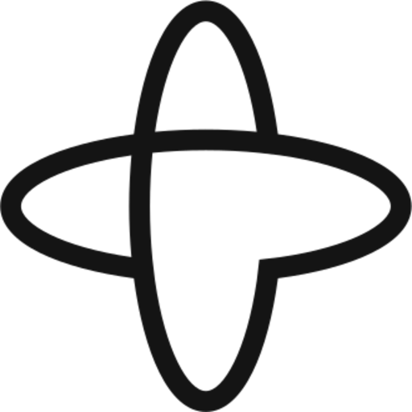
$ cd secao-1 && cat README
Abertura
a dor de todo dev Python que já precisou garantir que algo termine
exemplos e slides
pythonbrasil 26
$ whoami # quem fala
Adilson Torres
Engenheiro de Software · DevOps · NetDevOps
8 anos de backend, DevOps e automação de redes
NIC.br · time do IX.br: automação da rede com Temporal, SAGA e FastAPI
Python no dia a dia: scripts e automações, Django, FastAPI, Nornir
Engenharia de Computação · Poli-USP
github.com/AdilsonTorres
linkedin.com/in/adilson-torres
pythonbrasil 26
$ whoami --trabalho # onde trabalho
NIC.br e o time do IX.br
Núcleo de Informação e Coordenação do Ponto BR
Sem fins lucrativos: executa os projetos do CGI.br, o Comitê Gestor da Internet no Brasil.
Registro.br (6 milhões de domínios .br) · CERT.br · Cetic.br · Ceptro.br · Ceweb.br · IX.br
Ponto de Troca de Tráfego: as redes se conectam direto, perto do usuário: mais rápido e mais barato. É o maior conjunto de PTTs do mundo, com mais de 3,7 mil redes.
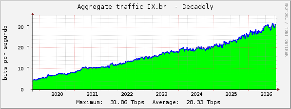
40
PTTs, nos 26 estados
55 Tbit/s
recorde de tráfego (jun/2026)
fontes: nic.br · ix.br (release de 23/09/2026) · gráfico: tráfego médio
pythonbrasil 26
$ whoami --talks # por onde passei
Da primeira Python Brasil até aqui
2019
Python Brasil 2019 · Ribeirão Preto · participante
minha primeira Python Brasil
2019
Grupy-SP · São Paulo · palestrante
25 de maio · minha primeira palestra: signals
2025
PyCon US 2025 · Pittsburgh · participante
Pydantic AI, OpenTelemetry, Python 3.14 e free-threading
2025
11ª Semana de Capacitação · NIC.br · co-palestrante
Event-Driven Network Automation na Prática
2026
12ª Semana de Capacitação · NIC.br · instrutor
Temporal (não é sobre chuva): resiliência na automação de redes
2026
Temporal Replay · San Francisco → PyCon US · Long Beach · participante
maio, nessa ordem · workshops de agentes de IA duráveis e MCP
hoje
Python Brasil 2026 · palestrante
Python + Temporal: o core de workflows modernos
pythonbrasil 26
$ tail -f /var/log/pedidos.log # um job de e-commerce, 7 passos em sequência
03:07 · alerta no celular: o pedido #4821 parou no meio
Passo 4 de 7 falhou. E agora?
passo 1
validar pedido
✅ feito
passo 2
reservar estoque
✅ feito
passo 3
cobrar cartão
✅ feito
passo 4
emitir nota fiscal
❌ API fora do ar
passo 5
separar no estoque
⏸ não rodou
passo 6
avisar cliente
⏸ não rodou
passo 7
fechar pedido
⏸ não rodou
O cartão já foi cobrado. Rodar tudo de novo cobra duas vezes; não rodar deixa o pedido pela metade.
É o problema de qualquer código com vários passos que precisa chegar ao fim.
pythonbrasil 26
$ cat exemplos/e00_problema/fragil.py # o "antes", simplificado
Uma máquina de estados escrita à mão
fragil.py
passo = ler_status_do_banco(pedido_id)
if passo == "validado":
com_retry("cobrar")
# o processo morre AQUI...
salvar_status("cobrado") # cobra duas vezes?
if passo == "cobrado":
try: com_retry("reservar_estoque")
except RuntimeError: com_retry("estornar") # e se falhar?
E ainda falta o cron que acha pedidos "presos", os alertas e o painel de status.
pythonbrasil 26
$ ls complexidade_acidental/ # o zoológico da complexidade acidental
Nada disso é regra de negócio
tenacity
retry dentro de um processo que pode morrer
Celery / RQ
tasks soltas; o estado do processo fica com você
cron
sem histórico, sem retry, sem "rodou ontem?"
tabela de status
máquina de estados à mão
idempotency key
para não repetir o que já foi feito
reconciliação
o script que conserta o que os outros quebraram
pythonbrasil 26
$ cd secao-2 && cat README
Conceitos
Durable Execution, histórico + replay e o SDK Python
pythonbrasil 26
> durable_execution --explain
Você escreve o caminho feliz.
O Temporal (open source) cuida de retries, estado, timers e recuperação. Se o processo morrer, a execução continua exatamente de onde parou.
$ temporal --version --historia # o que é o temporal
Temporal: Durable Execution open source
de onde veio
2012
AWS Simple Workflow (SWF): Maxim Fateev e Samar Abbas no time que lançou
depois
Samar cria o Durable Task Framework na Microsoft, base do Azure Durable Functions
Uber
os dois criam o Cadence, open source
2019
fundam a Temporal: um fork do Cadence, open source (MIT)
SDKs oficiais
Go
Java
Python
TypeScript
.NET
PHP
Ruby
+ Rust em preview · self-hosted ou Temporal Cloud
quem usa
Netflix · Stripe · Snap · OpenAI · NVIDIA · JPMorgan Chase · Datadog
segundo os casos publicados pela Temporal
usos:
pagamentos e pedidos
deploys e infra
agentes de IA
pipelines de dados
onboarding
redes
pythonbrasil 26
$ temporal workflow show -w pedido-42 # o modelo mental
Histórico de eventos + replay
1 · WorkflowExecutionStarted
2 · ActivityTaskCompleted validar_pedido
3 · ActivityTaskCompleted cobrar → "pag-42"
4 · ActivityTaskScheduled reservar_estoque
✕ worker morre (kill -9)
↻ novo worker: replay de 1–4
5 · ActivityTaskCompleted reservar_estoque
O servidor guarda cada decisão e cada resultado.
O worker (seu processo Python) reexecuta o código do workflow do início; passos já concluídos devolvem o resultado do histórico, sem rodar de novo.
Por isso o workflow precisa ser determinístico.
pythonbrasil 26
$ temporal --arquitetura # as peças
Seu código roda nos seus workers
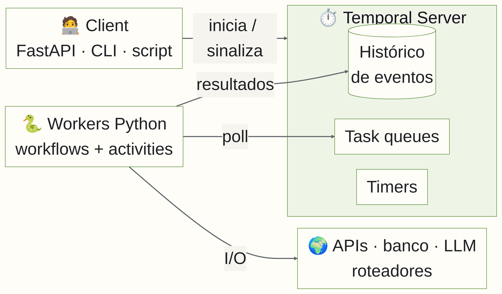
Workflow: a orquestração, determinística
Activity: qualquer I/O, com retry
Worker: processo Python que hospeda os dois
Server: guarda o histórico; não executa seu código
pythonbrasil 26
$ docker compose ps # as peças, por dentro
O que roda onde
no seu lado (sua infra)
Client
inicia workflows, manda Signal/Update, faz Query
Workers
processos Python com seus Workflows e Activities; buscam tarefas nas filas
⇄
Temporal Service
Frontend
API gRPC (:7233), entrada de tudo
History
histórico de eventos e timers
Matching
task queues
Banco
PostgreSQL, MySQL ou Cassandra (SQLite no dev)
Visibilidade
busca e listas: SQL, ou Elasticsearch/OpenSearch (opcional)
Web UI
a interface que vamos ver já já
CLI / admin-tools
temporal, schema, tdbg
Para desenvolver: temporal server start-dev junta tudo num binário, com SQLite e a UI.
pythonbrasil 26
$ cat exemplos/e01_pedido/workflows.py # workflow
O caminho feliz, em Python comum
workflows.py
@workflow.defn
class PedidoWorkflow:
@workflow.run
async def run(self, pedido: Pedido) -> ResultadoPedido:
await workflow.execute_activity(
validar_pedido, pedido, start_to_close_timeout=TIMEOUT)
pag = await workflow.execute_activity(
cobrar, pedido, start_to_close_timeout=TIMEOUT)
# reservar, enviar, notificar... sem tabela de status
decorators
asyncio
type hints
Pydantic
retry declarado
pythonbrasil 26
$ cat exemplos/e01_pedido/{activities,worker}.py # activity + worker (simplificado)
O I/O mora nas activities
activities.py · worker.py
@activity.defn
async def cobrar(pedido: Pedido) -> str:
# I/O de verdade: pode falhar e rodar mais de uma vez
resp = await gateway.cobrar(pedido.valor, chave=pedido.id)
return resp.id
await Worker(client, task_queue="pedidos",
workflows=[PedidoWorkflow], activities=[cobrar]).run()
Qualquer lib serve: httpx, SQLAlchemy, boto3. A regra é uma só: idempotente (rodar 2× = rodar 1×).
pythonbrasil 26
$ man determinismo # a única regra nova
O workflow precisa ser determinístico
| No workflow, não use | Use |
|---|---|
| datetime.now() | workflow.now() |
| uuid.uuid4() · random | workflow.uuid7() · workflow.random() |
| time.sleep() | await workflow.sleep(timedelta(days=30)) |
| requests / httpx / banco | uma activity |
| threads | asyncio.gather sobre activities |
O sandbox do SDK Python barra várias dessas chamadas (datetime.now, random...) antes de virarem bug.
pythonbrasil 26
$ cd secao-3 && cat README
Na prática
tour da Temporal UI e kill -9 no worker
pythonbrasil 26
Temporal UI · Lista de workflows
todas as execuções: status, ID, tipo e horário
pythonbrasil 26
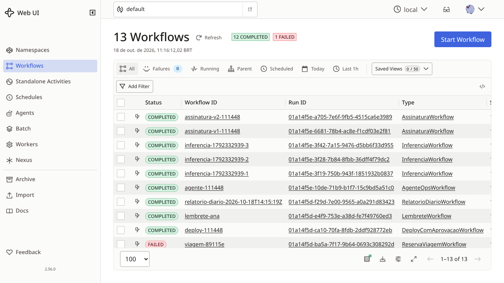
Temporal UI · Timeline
cada activity é uma barra no tempo
pythonbrasil 26
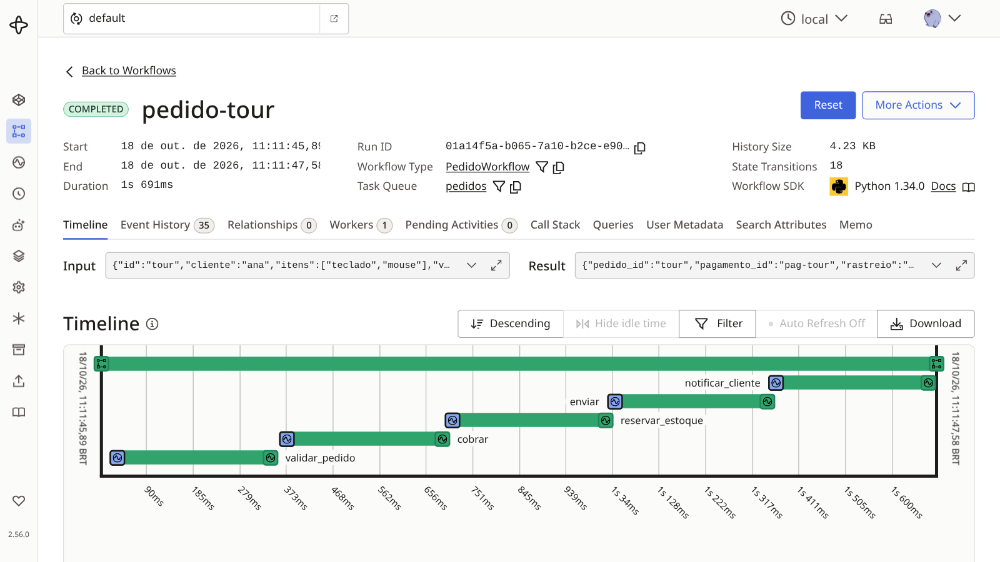
Temporal UI · Event History
o log que o replay usa, com input e resultado
pythonbrasil 26
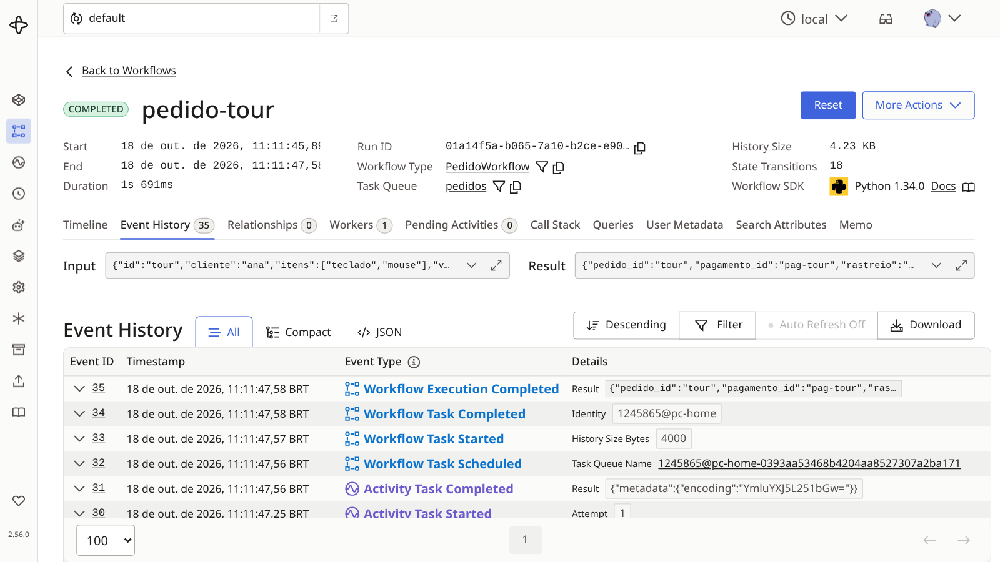
Temporal UI · Pending Activities
tentativa, último erro e próximo retry
pythonbrasil 26
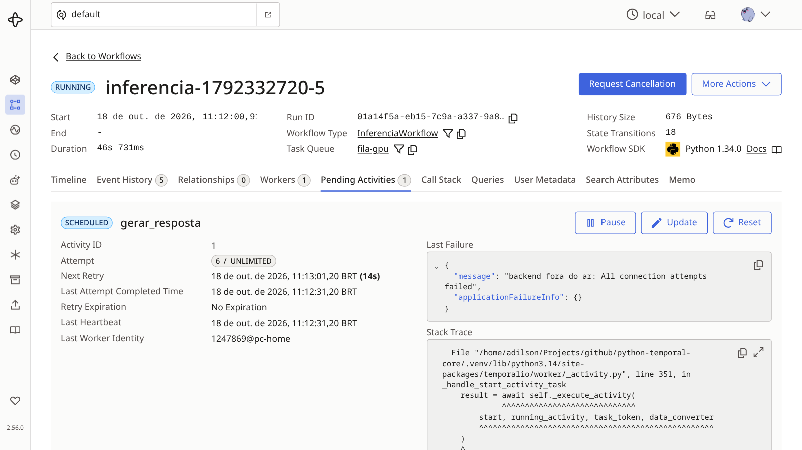
$ make e01-worker & make e01 && kill -9 $WORKER # na prática
kill -9 no worker
bash
# terminal 1 make servidor # ou: make docker-up
# terminal 2 make e01-worker
# terminal 3 make e01
# no meio do "reservar estoque":
kill -9 <pid do worker>
# make e01-worker de novo e assiste
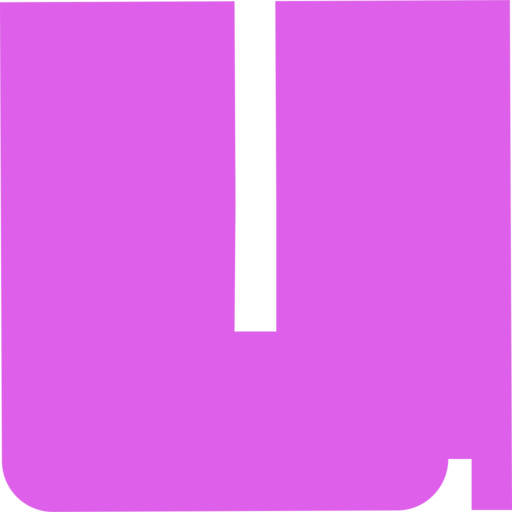

uv ou Docker · Temporal UI: localhost:8233
pythonbrasil 26
e01 · kill -9 no worker e o workflow retoma
o worker morre e outro retoma do mesmo passo
pythonbrasil 26
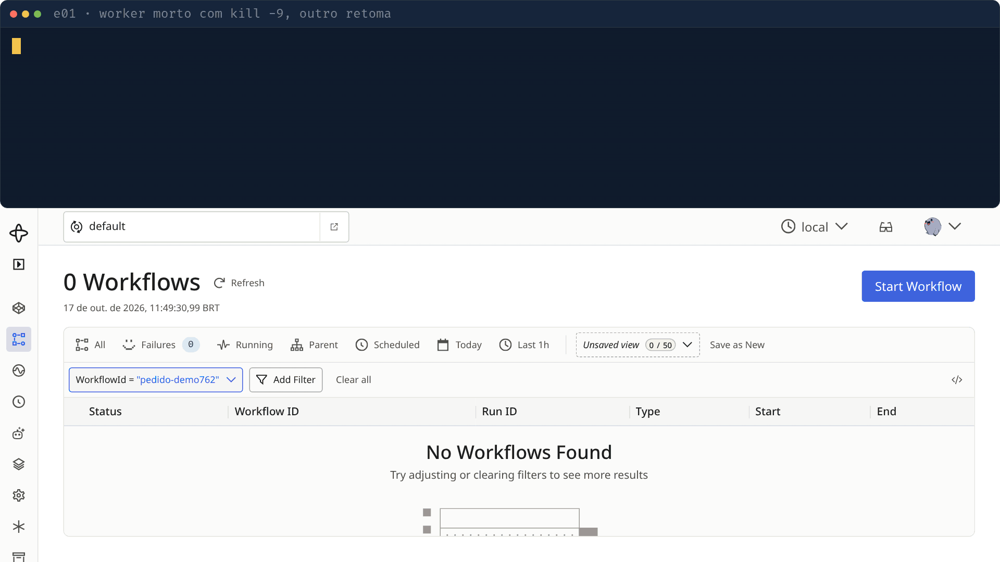
$ temporal workflow show | tail # o que aconteceu
Ninguém escreveu código de recuperação
0
cobranças duplicadas: "cobrar" veio do histórico no replay
1 passo
reexecutado: a activity que estava rodando quando o worker morreu
Tudo visível
inputs, outputs, tentativas e erros de cada passo na UI
Vale também para deploy, OOM, máquina reiniciada ou rede caída. O mesmo mecanismo cobre todos.
pythonbrasil 26
$ cd secao-4 && cat README
Padrões
idempotência, SAGA, aprovação humana e Schedules, com os exercícios rodando
pythonbrasil 26

$ cat exemplos/e02_idempotencia/*.py # padrão 1
Workflow ID é chave de idempotência
api.py
@app.post("/webhooks/pagamento")
async def webhook(evento: EventoPagamento):
await temporal.start_workflow(
PagamentoRecebidoWorkflow.run, evento,
id=f"pagamento-{evento.evento_id}", # a chave!
task_queue="pagamentos",
id_conflict_policy=USE_EXISTING)
webhook reenviado 3× → 1 workflow
Deduplicação de graça, sem tabela de eventos processados.
pythonbrasil 26
e02 · webhook repetido, um workflow
3 entregas do mesmo webhook, uma execução
pythonbrasil 26
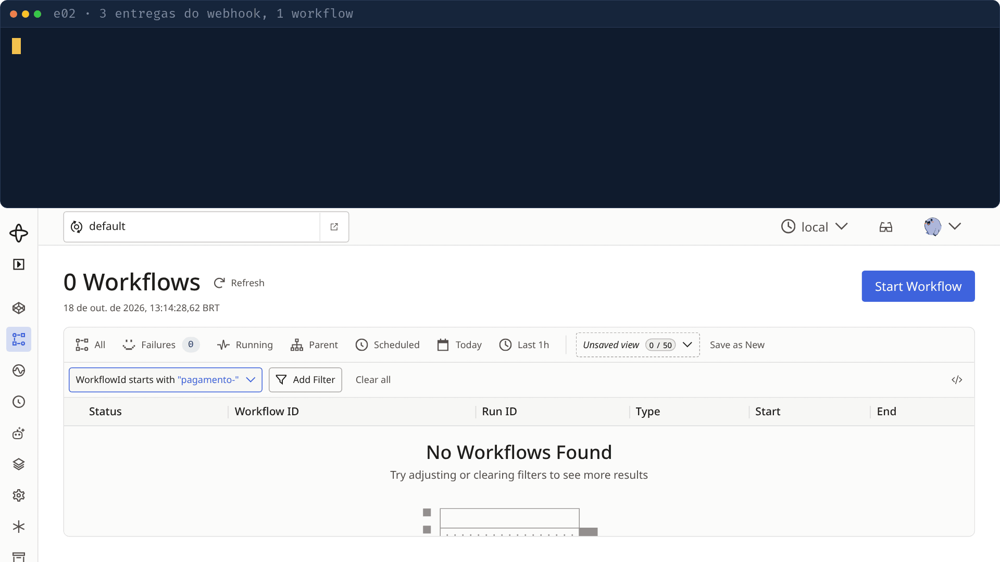
$ make e03-falha # padrão 2 · exemplos/e03_saga
SAGA: desfazer em ordem reversa
✈️ reservar voo
→
🏨 reservar hotel
→
🚗 reservar carro
ok
→
✅ confirmada
↓ carro falhou: compensa em ordem reversa
❌ viagem desfeita
←
↩️ cancelar voo
←
↩️ cancelar hotel
Carro falhou
erro de negócio: não adianta retentar
Compensa
cancela o hotel, depois o voo
Durável
o rollback continua se o worker cair
make e03-falha
pythonbrasil 26
$ cat exemplos/e03_saga/workflows.py # padrão 2
É só try/except
workflows.py
compensacoes = []
try:
voo = await executar(reservar_voo, viagem)
compensacoes.append((cancelar_voo, voo))
hotel = await executar(reservar_hotel, viagem)
compensacoes.append((cancelar_hotel, hotel))
await executar(reservar_carro, viagem)
except Exception:
for cancelar, reserva in reversed(compensacoes):
await executar(cancelar, reserva)
"executar" = workflow.execute_activity com timeout
pythonbrasil 26
e03 · SAGA: compensações na timeline
o carro falha; hotel e voo são desfeitos
pythonbrasil 26
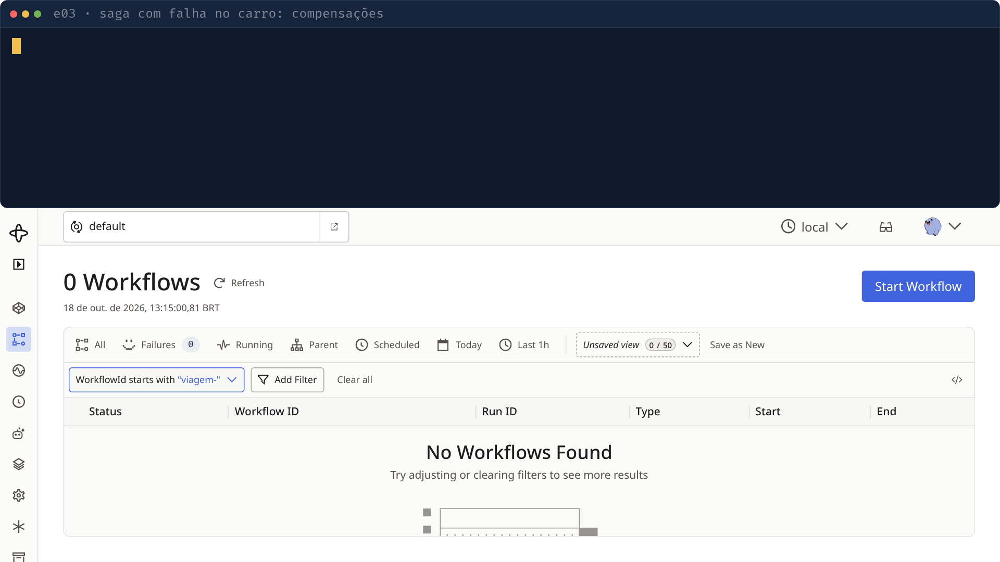
$ make e04-pedir && make e04-aprovar QUEM=bruno # padrão 3 · exemplos/e04_aprovacao
Aprovação humana no meio do fluxo
Ana
start + Update
Update-with-Start: inicia o workflow e já recebe a resposta
workflow
⏳ wait_condition
espera até 3 dias
Ana
Update aprovar(ana)
❌ validador: não aprove o próprio deploy
Bruno
Update aprovar(bruno)
✅ aprovado por bruno
workflow
activity fazer_deploy
o deploy roda
Update: síncrono, com resposta e validador
Signal: assíncrono, "fire and forget"
Query: lê o estado
Timer de 3 dias: sobrevive a deploys
make e04-pedir · make e04-aprovar QUEM=bruno
pythonbrasil 26
$ cat exemplos/e04_aprovacao/workflows.py # padrão 3
Esperar, aprovar, validar
workflows.py
await workflow.wait_condition(
lambda: self.aprovador or self.rejeitado_por,
timeout=timedelta(days=3))
@workflow.update
def aprovar(self, a: Aprovacao) -> str:
self.aprovador = a.aprovador
@aprovar.validator
def validar(self, a: Aprovacao) -> None:
if a.aprovador == self.solicitante:
raise ValueError("quem pediu não pode aprovar o próprio deploy")
pythonbrasil 26
e04 · aprovação humana via Update
Ana não se aprova; Bruno aprova e o deploy roda
pythonbrasil 26
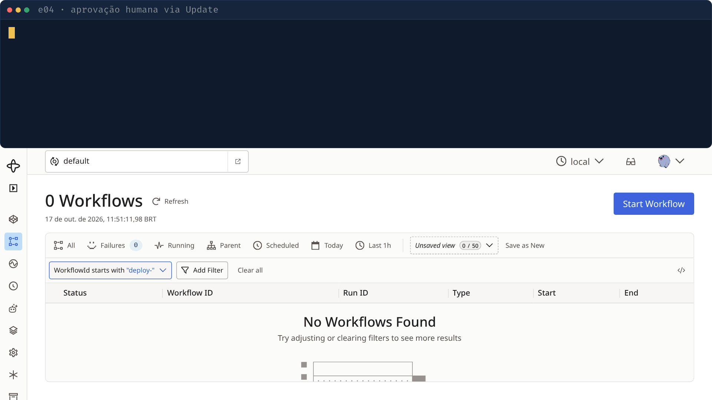
$ cat exemplos/e05_agendamentos/*.py # padrão 4
Timers duráveis e Schedules
workflows.py
await enviar("bem-vinda(o)!")
await workflow.sleep(timedelta(days=7)) # não segura processo
await enviar("como está sendo sua primeira semana?")
schedule = Schedule( # o crontab, com histórico
action=ScheduleActionStartWorkflow(RelatorioDiario.run, ...),
spec=ScheduleSpec(
cron_expressions=["0 8 * * 1-5"], # seg a sex, 8h
# ou: intervals=[ScheduleIntervalSpec(every=timedelta(hours=1))]
# ou: calendars=[ScheduleCalendarSpec(hour=[ScheduleRange(8)])]
time_zone_name="America/Sao_Paulo"),
)
pausar
disparar agora
reprocessar dias perdidos
sem execuções sobrepostas
cada execução na UI
make e05 · make e05-agendar
pythonbrasil 26
e05 · timer durável e Schedule
lembrete com timer durável e um Schedule
pythonbrasil 26
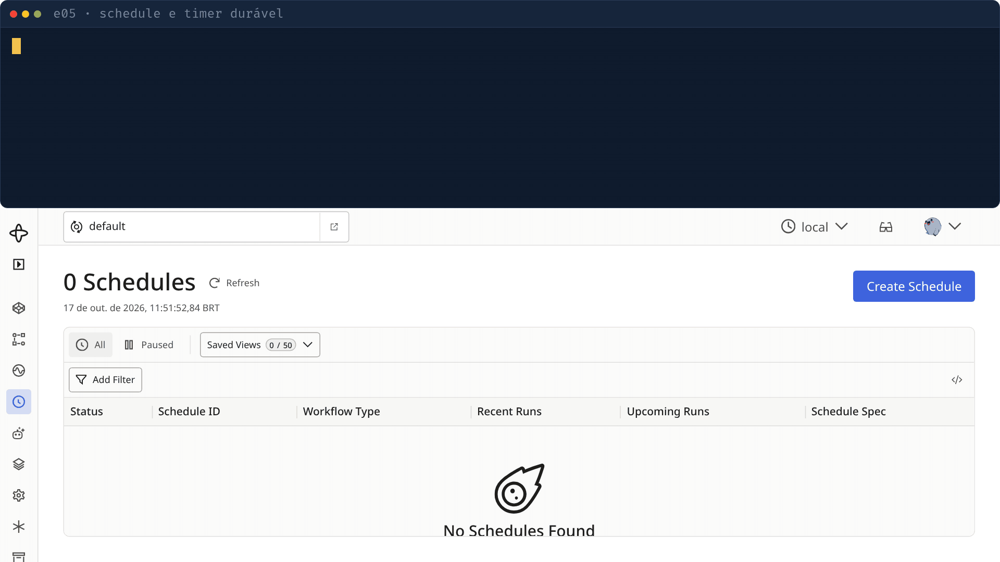
$ cd secao-5 && cat README
Aplicações
agentes de IA duráveis com Pydantic AI e MCP, redes, testes, negócios
pythonbrasil 26
$ make e06 # aplicações · agentes de IA
Um agente é um workflow com um LLM no loop
① 📝 pedido
do usuário
→
② 🤖 LLM
decide o próximo passo · activity
→
tool:
③ 🔧 consultar_status
activity ou MCP
↺ volta
ao LLM
perigosa:
③ ⏳ aprovação
Update humano
→
④ 🔁 reiniciar
activity
↺ volta
ao LLM
final:
③ ✅ resultado
fim do workflow
Cada volta do loop é um passo durável: se o worker cair, o agente retoma sem repetir chamadas ao LLM.
funciona com
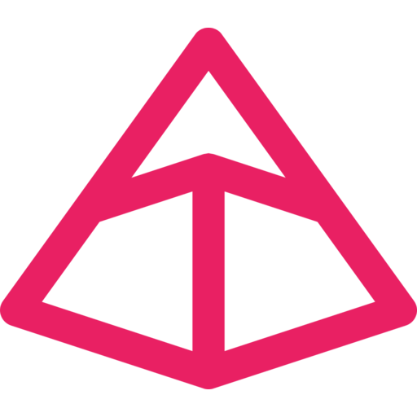
Pydantic AI · MCP · LangGraph · Strands
pythonbrasil 26
$ cat exemplos/e06_agente/agente.py # pydantic ai + temporal
Um agente Pydantic AI, durável
agente.py
agente = Agent(
modelo, name="agente_ops",
output_type=[str, DeferredToolRequests],
capabilities=[TemporalDurability()], # LLM e tools → activities
)
@agente.tool_plain(requires_approval=True)
async def reiniciar_servico(servico: str) -> str: ...
AGENTE_MODELO: vazio = LLM falso (offline) · ollama:qwen3:8b = local · anthropic:/openai: = API · claude-code = CLI logado
make e06
pythonbrasil 26
$ cat exemplos/e06_agente/workflows.py # pydantic ai + temporal
O workflow espera a aprovação
workflows.py
resultado = await agente.run(pedido)
while isinstance(resultado.output, DeferredToolRequests):
await workflow.wait_condition(lambda: self.decisao is not None)
resultado = await agente.run(
message_history=resultado.all_messages(),
deferred_tool_results=aprovacoes)
return resultado.output
O validador do Update impede o agente de aprovar a si mesmo.
make e06-aprovar QUEM=bruno
pythonbrasil 26
$ AGENTE_MODELO=claude-code make e06-worker # um pedido real, LLM de verdade
Um pedido real ao Claude
e06 · agente com Claude Code
$ AGENTE_MODELO=claude-code make e06-worker &
$ make e06 PEDIDO="O serviço checkout está lento, verifique e resolva"
🤖 agente-claude-11948: agente trabalhando
$ make e06-pendencias
⏳ reiniciar_servico({'servico': 'checkout'}) # pediu aprovação
$ make e06-aprovar QUEM=bruno
✅ aprovado por bruno
🤖 O serviço checkout estava degradado (p99 = 4.2s, 12% de erros 5xx).
Reiniciei o serviço e a latência foi normalizada.
O Claude decidiu reiniciar, mas só agiu depois do Bruno aprovar. Cada chamada ao modelo foi uma activity no histórico.
pythonbrasil 26
e06 · agente durável com aprovação
pausa e pede aprovação; depois reinicia e responde
pythonbrasil 26
$ grep -rl temporal ~/projetos # a mesma base, contextos diferentes
Onde já uso Temporal com Python
Automação de redes
webhook do NetBox → FastAPI → workflow → equipamentos, com SAGA e aprovação
Fila de GPU para LLM local
uma inferência por vez; se o Ollama cai, a requisição espera em vez de falhar
Testes automatizados
cada suíte vira activity; só o que falhou roda de novo
Operação e negócio
ingestão para RAG, upgrades com rollback, testes de restauração de backup, lembretes
pythonbrasil 26
$ cd secao-6 && cat README
Produção
testes, versionamento e lições aprendidas
pythonbrasil 26

$ uv run pytest # produção · testes com pytest
Um timer de 30 dias em milissegundos
test_lembrete.py
env = await WorkflowEnvironment.start_time_skipping()
async with Worker(env.client, ...):
r = await env.client.execute_workflow(
LembreteWorkflow.run, Lembrete(em=timedelta(days=30)), ...)
assert r == "lembrete enviado" # roda em ~0,1 s
# no CI: o código novo ainda reproduz os históricos gravados?
await Replayer(workflows=[PedidoWorkflow]).replay_workflow(historico)
time-skipping
mock de activity
replay no CI
38 testes em ~20 s · make test
make test · make replay
pythonbrasil 26
$ cat exemplos/e08_versionamento/v2.py # produção
Mudar código com workflows rodando
v2.py
await workflow.execute_activity(cobrar, assinatura, ...)
await workflow.sleep(timedelta(days=30))
if workflow.patched("lembrete-antes-de-renovar"): # passo novo
await workflow.execute_activity(enviar_lembrete, assinatura, ...)
return await workflow.execute_activity(renovar, assinatura, ...)
Sem patched(): execuções que já passaram desse ponto quebram com NondeterminismError.
Gate de deploy: replay dos históricos gravados no CI (make replay).
make e08-worker-v1 · make e08 · make e08-worker-v2
patched(): mudança pontual · Worker Versioning (Pinned / Auto-Upgrade: cada workflow fica na versão em que começou): o recomendado para produção
pythonbrasil 26
$ head -6 licoes.md # produção · o que eu aprendi (1/2)
Seis lições de produção (1/2)
1
Activities idempotentes
Retry e worker que cai depois de executar fazem a activity rodar de novo. Use uma chave de idempotência no serviço externo.
gateway.cobrar(valor, chave=pedido.id)
2
Payloads pequenos
O histórico guarda todo input e output: até 2 MB por payload e ~50 MB por execução. Guarde o arquivo fora e passe a referência.
s3://ingestao/doc-42.pdf # claim check
3
Heartbeat em activity longa
Sem heartbeat, o Temporal só descobre que o worker morreu no timeout. Com heartbeat, detecta rápido e a nova tentativa retoma do progresso.
activity.heartbeat(i) · heartbeat_timeout=30s
pythonbrasil 26
$ head -6 licoes.md # produção · o que eu aprendi (2/2)
Seis lições de produção (2/2)
4
Task queues por domínio
Uma fila para rede, outra para NetBox, notificações e GPU. Cada worker escala sozinho e um gargalo não trava os outros.
Worker(task_queue="gpu", max_concurrent_activities=1)
5
Replayer no CI
Mudar o código de um workflow em andamento quebra o replay. Rode históricos reais no CI antes do deploy e use patched para mudanças.
Replayer(workflows=[...]).replay_workflow(historico)
6
Observabilidade desde o início
Search attributes para achar execuções por cliente ou pedido, métricas do SDK no Prometheus e alerta para fila sem pollers.
upsert_search_attributes · temporal_long_request
pythonbrasil 26
$ cd secao-7 && cat README
Encerramento
onde o Temporal se encaixa e próximos passos
pythonbrasil 26
$ diff celery airflow temporal # onde o temporal se encaixa
Complementa, não substitui
Celery / RQ
tasks curtas · Temporal: estado durável do processo inteiro
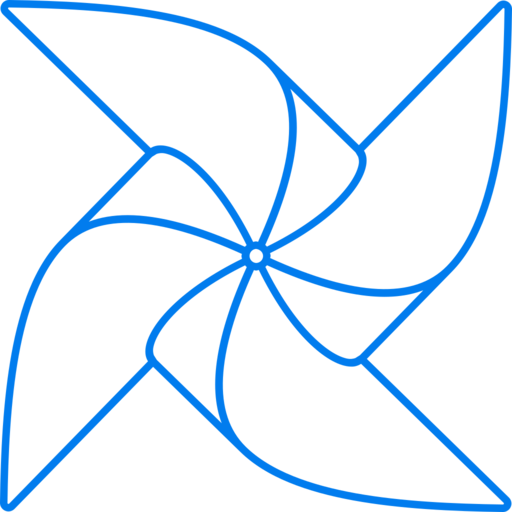
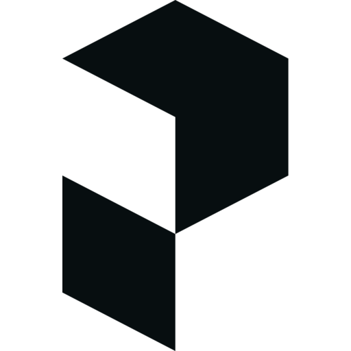
Airflow / Dagster / Prefect
DAGs de dados · Temporal: processos interativos e longos
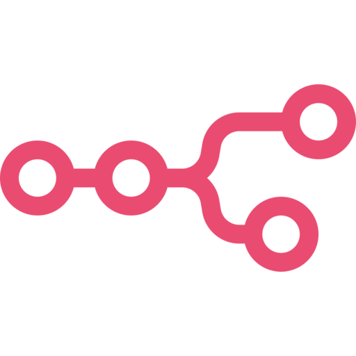
n8n
low-code · Temporal: lógica testável e revisável em PR
cron
script pontual · Temporal: histórico, retry, backfill
"Ele não substitui sua fila nem seu pipeline de dados; substitui o código que você escreve para sobreviver às falhas entre eles."
pythonbrasil 26
$ which temporal || echo 'cron basta' # e quando não usar
Nem tudo precisa de Durable Execution
| Situação | Use no lugar | Por quê |
|---|---|---|
| Script de segundos, idempotente | cron / systemd timer | nada para lembrar entre execuções |
| Request/response em ms | FastAPI direto | persistir cada passo adiciona latência |
| Fila de tasks curtas e independentes | Celery / RQ / Dramatiq | sem estado entre as tasks |
| Pipeline de dados em lote | Airflow / Dagster / Prefect | agendamento de DAGs, lineage, conectores |
| Streaming de alto volume | Kafka / Flink | eventos por segundo, janelas, agregação |
| Tudo na AWS, fluxo simples | Step Functions | serverless, zero operação |
E o custo de operar: self-hosted pede banco, upgrades e backup; o Temporal Cloud cobra por ação. Para duas automações simples, não compensa.
pythonbrasil 26
$ git log --since=2026-01 --oneline # encerramento · o que há de novo em 2026
Novidades recentes do ecossistema
Server 1.32 (set/2026)
Standalone Activities GA, Poller Autoscaling, Priority & Fairness
SDK Python 1.32–1.34
workflow.uuid7(), logging JSON, conversor Pydantic mais rápido, Standalone Activities
Agentes
Pydantic AI TemporalDurability, OpenAI Agents SDK, Strands, LangGraph, activity_as_tool
Worker Versioning
Pinned / Auto-Upgrade com ramping, automatizado via GitHub Actions
Fontes: releases temporalio/temporal e sdk-python · blog temporal.io (set/2026)
pythonbrasil 26
$ git log --grep=fix --oneline # encerramento · erros que eu cometi
Para você não repetir
| O erro | O que aprendi |
|---|---|
| Versionamento PINNED esquecido (workflows presos ao worker antigo): lembretes pararam por 3 h, em silêncio | replay no CI + drenar workers antigos |
| Workflow "eterno" bateu o limite de updates por execução | continue_as_new quando o servidor sugerir |
| Heartbeat só no fim de cada rodada | heartbeat contínuo numa task em paralelo |
| Documentos inteiros no histórico | claim check: guarde fora, passe a referência |
| Sync de schedules apagou o schedule de outro projeto | dono explícito para cada schedule |
pythonbrasil 26
$ temporal operator cluster health # encerramento · operar o temporal
Self-hosted sem sustos
Banco
Postgres para histórico e Advanced Visibility: dispensa Elasticsearch
Upgrades
backup → migração de schema → verificação; e um restore drill agendado
Observabilidade
métricas do SDK no Prometheus/Grafana, search attributes para buscar na UI
Canários
DescribeTaskQueue: alerta se uma fila ficar sem pollers
pythonbrasil 26
$ temporal --help # encerramento · próximos conceitos
Quando o workflow cresce
| Recurso | Quando usar |
|---|---|
| Child workflow | fan-out com histórico próprio por item; isolar falhas |
| Continue-as-new | workflows "eternos" (loops, sessões longas): recomeça com histórico limpo |
| Nexus | chamar operações de outro time ou namespace com contrato |
| Local activity | passos curtíssimos, sem ida ao servidor por tarefa |
| Payload codec | criptografar ou comprimir dados no histórico |
pythonbrasil 26
> cat levar-para-casa.txt # para levar para casa
1. Escreva só o caminho feliz.
2. Workflow determinístico, activity idempotente.
3. É Python comum: asyncio, Pydantic, pytest.
4. A mesma base serve de redes a agentes de IA.
a stack do repo
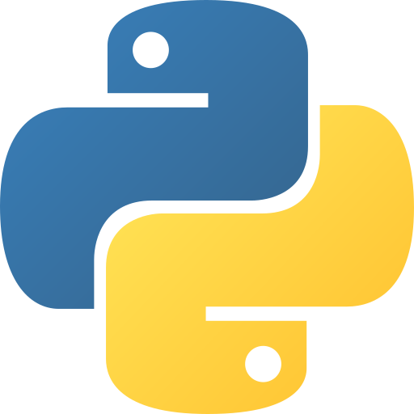


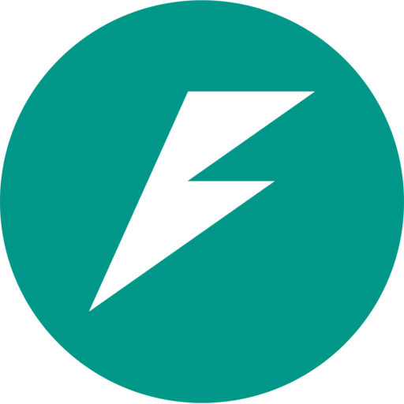
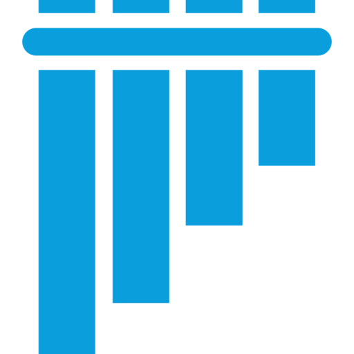

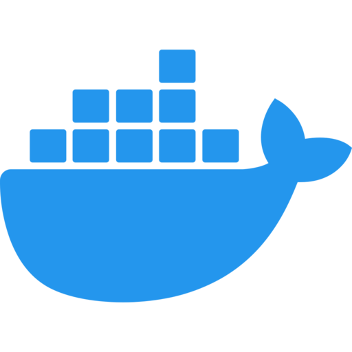
make setup · make servidor · make e01-worker · make e01
pythonbrasil 26
$ exit 0 # obrigado!
Perguntas?
Exemplos, testes e roteiro das demos:
github.com/AdilsonTorres/python-temporal-core
docs.temporal.io/develop/python
Adilson Torres · linkedin.com/in/adilson-torres
pythonbrasil 26
$ cd secao-8 && cat README
Extras: benchmark primeiro, depois exemplos e bastidores
(fora da palestra principal)
pythonbrasil 26
$ make e09 # extra · exemplos/e09_benchmark_python
Um workflow que mede 3.13 × 3.14 × 3.15
| benchmark | 3.13.16 | 3.14.8 | 3.15.0 |
|---|---|---|---|
| nbody | 69,6 ms | 64,6 ms · 1,08× | 63,6 ms · 1,09× |
| fib | 23,6 ms | 21,4 ms · 1,10× | 21,1 ms · 1,12× |
| json | 60,8 ms | 59,6 ms · 1,02× | 54,2 ms · 1,12× |
| regex | 3,4 ms | 3,7 ms · 0,92× | 3,6 ms · 0,94× |
| comprehension | 76,9 ms | 67,7 ms · 1,14× | 73,1 ms · 1,05× |
| média geom. | 1,00× | 1,05× | 1,06× |
Uma activity por (versão × benchmark) com uv run --python; max_concurrent_activities=1 para medir de forma justa. Se o worker cair, o que já foi medido não roda de novo.
Mediana de 30 medições por célula (10 rodadas × 3); abaixo de ~5% é ruído
pythonbrasil 26
Benchmark 3.13 × 3.14 × 3.15
uma activity por versão × benchmark, uma por vez
pythonbrasil 26
$ make x06-medidores && make x06 # extra (repo privado) · benchmark
Como o Temporal roda o benchmark
📊 BenchmarkVersoes
workflow · rodadas · relatório
→
extra-bench-py3.13
→
worker no Python 3.13
mede 3.13
→
extra-bench-py3.14
→
worker no Python 3.14
mede 3.14, 3.14t, 3.14+jit
→
extra-bench-py3.15
→
worker no Python 3.15
mede 3.15, 3.15t, 3.15+jit
Roteamento
cada medição vai para a fila da versão certa
Retry + heartbeat
worker caiu? o que mediu fica; o resto é retentado
Rodadas justas
ordem embaralhada por rodada (workflow.random)
Ao vivo
Query progresso/parcial · Signal parar · Update mais_rodadas
pythonbrasil 26
$ cat extras/x06_bench_versoes/workflows.py # extra (repo privado) · a estrutura
O benchmark é um workflow comum
workflows.py (resumido)
@workflow.defn
class BenchmarkVersoesWorkflow:
@workflow.run
async def run(self, entrada: Entrada) -> Resultado:
alvos = [alvo_de(v) for v in entrada.versoes + entrada.variantes]
await asyncio.gather(*[self._ambiente(a) for a in alvos]) # GIL? JIT?
while self.rodada < self.rodadas and not self.parado:
pares = [(a, c) for c in cenarios for a in alvos]
workflow.random().shuffle(pares) # ordem justa a cada rodada
await asyncio.gather(*[self._medir(a, c) for a, c in pares])
return Resultado(markdown(self.medicoes))
async def _medir(self, alvo, cenario):
return await workflow.execute_activity("medir", Pedido(alvo, cenario),
task_queue=alvo.fila, # a fila do worker daquela versão
heartbeat_timeout=timedelta(seconds=30), retry_policy=RETRY)
pythonbrasil 26
x06 · o benchmark rodando: terminal + Temporal UI
um worker por versão; cada barra é uma medição
pythonbrasil 26
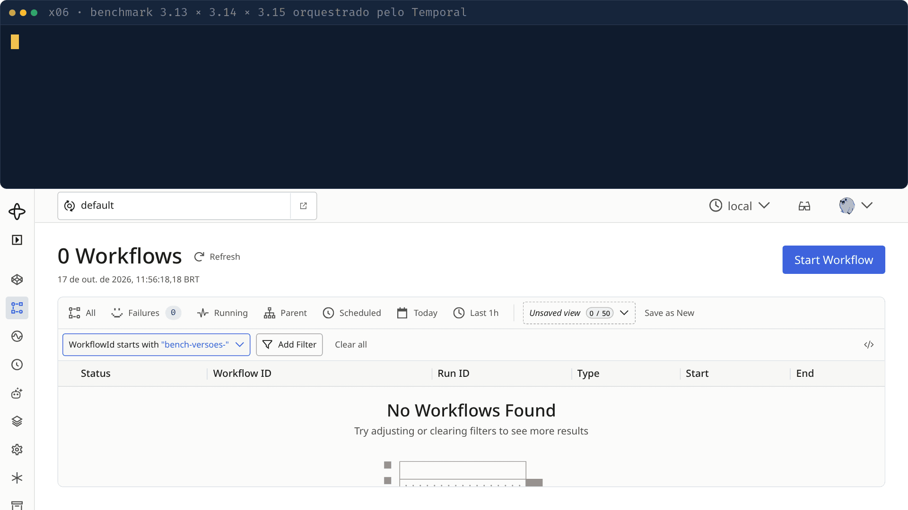
x06 no Temporal · Entrada e timeline ao vivo
o input: versões, variantes e cenários
pythonbrasil 26
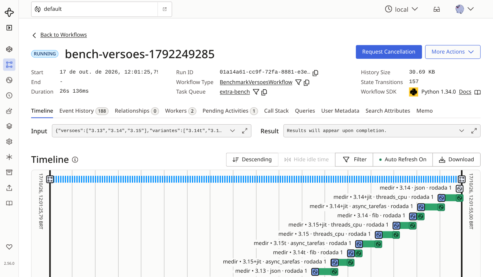
x06 no Temporal · Medição rodando agora
a medição atual: tentativa, heartbeat, worker
pythonbrasil 26
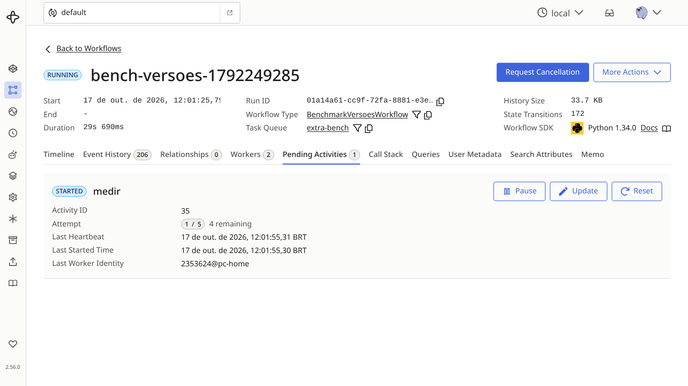
x06 no Temporal · Query parcial: relatório ao vivo
a Query lê o relatório sem parar o benchmark
pythonbrasil 26
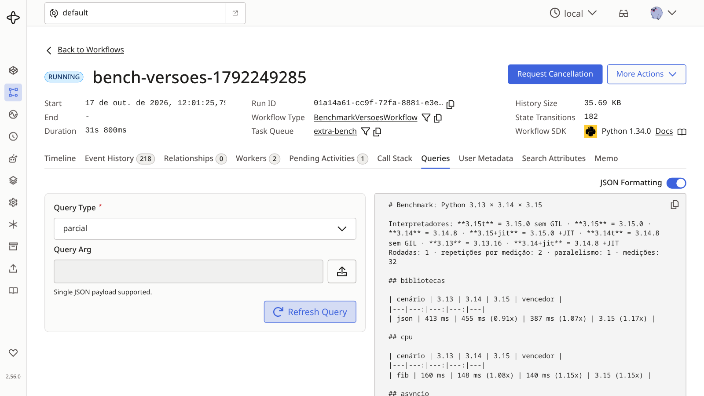
x06 no Temporal · Um worker por versão
cada versão do Python na sua fila
pythonbrasil 26
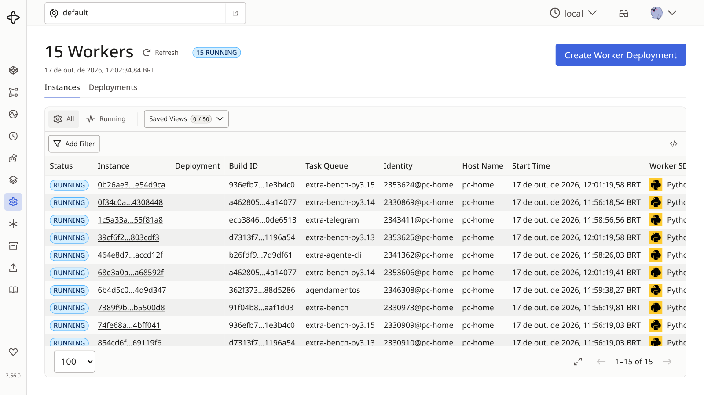
x06 no Temporal · A fila do Python 3.15
3.15, 3.15t (sem GIL) e 3.15+JIT
pythonbrasil 26
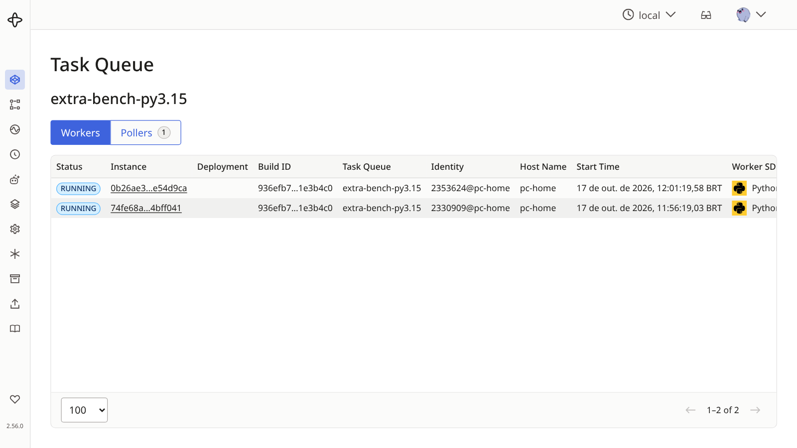
x06 · resumo
speedup de cada variante contra a 3.13
pythonbrasil 26
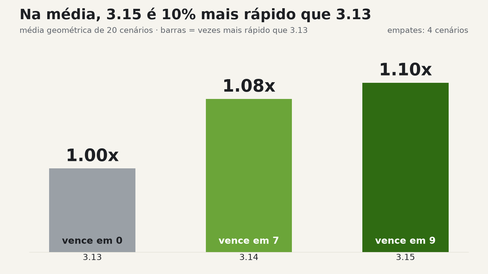
x06 · quem ganha em cada cenário
a versão mais rápida em cada cenário
pythonbrasil 26
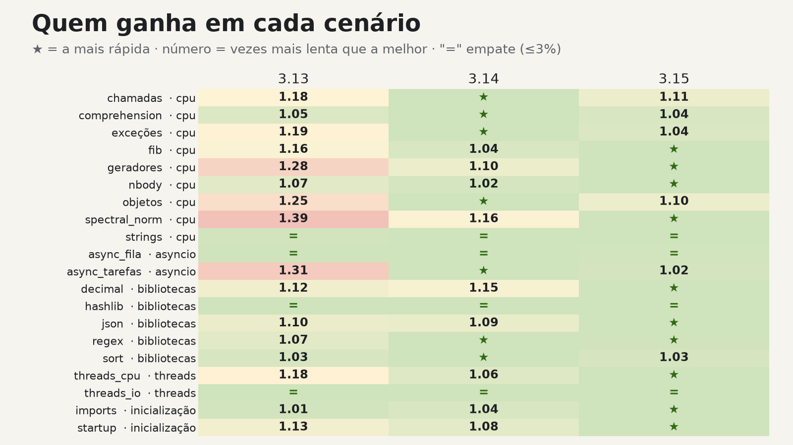
x06 · sem GIL
variantes sem GIL contra as normais
pythonbrasil 26
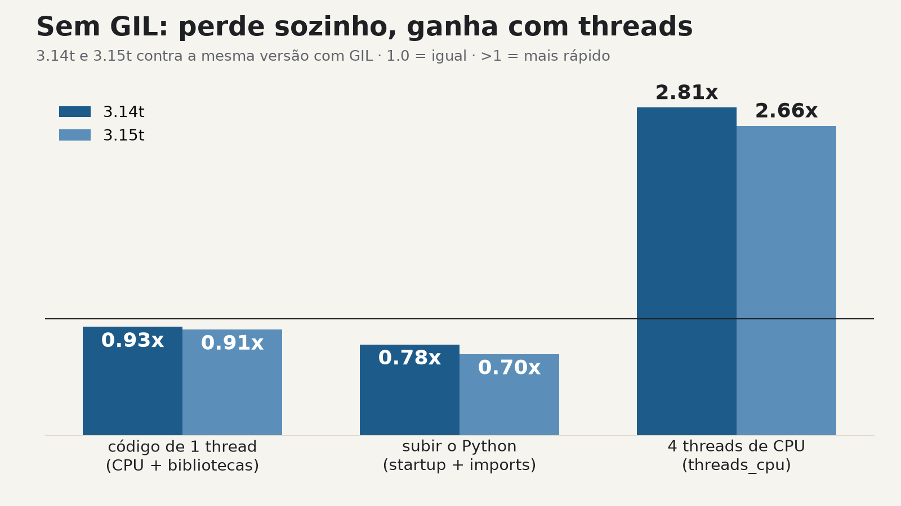
x06 · JIT
o JIT contra a mesma versão sem JIT
pythonbrasil 26
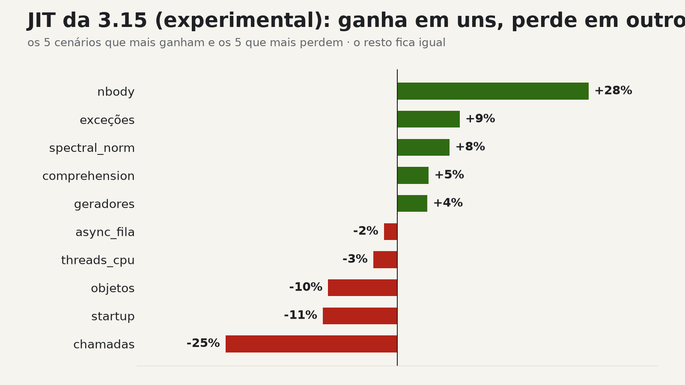
$ cat resultados/bench-versoes-*.md # extra (repo privado) · o que o benchmark mostrou
Onde cada versão ganha
3.15 ganha em CPU e bibliotecas
spectral_norm 1.39x, geradores 1.28x, decimal 1.12x, json 1.10x
3.14 ganha em objetos e asyncio
objetos 1.25x, exceções 1.19x, muitas tasks asyncio 1.31x
Empates
hashlib, strings, threads de I/O e fila asyncio: o trabalho é C ou espera
Sem GIL
4 threads de CPU 2.7-2.8x mais rápido; uma thread só e startup ficam mais lentos
JIT
experimental: nbody 1.28x na 3.15; chamadas pequenas 25% (3.15) a 34% (3.14) mais lentas
Média
3.14 = 1.08x e 3.15 = 1.10x contra a 3.13 (suíte do x06: 10 rodadas, 1.400 medições)
make x06 ARGS="--rodadas 10" · uv run --with matplotlib python -m extras.x06_bench_versoes.graficos
pythonbrasil 26
$ cat exemplos/e07_fila_gpu/workflows.py # extra
Fila de GPU para LLM local (1/2)
workflows.py
ESPERAR_BACKEND = RetryPolicy(
initial_interval=timedelta(seconds=2),
maximum_interval=timedelta(seconds=30),
maximum_attempts=0) # sem limite
await workflow.execute_activity(
gerar_resposta, prompt,
schedule_to_close_timeout=timedelta(hours=1),
heartbeat_timeout=timedelta(seconds=30),
retry_policy=ESPERAR_BACKEND)
extra · fora da palestra principal
pythonbrasil 26
$ cat exemplos/e07_fila_gpu/worker.py # extra
Fila de GPU para LLM local (2/2)
worker.py
Worker(..., max_concurrent_activities=1)
1 inferência por vez protege a VRAM
Ollama caiu (GPU ocupada por outro uso, restart): as requisições esperam e retentam
Demo: 5 prompts, mata o backend falso, sobe de novo, tudo completa
extra · fora da palestra principal
pythonbrasil 26
Fila de GPU: espera e retenta
o backend cai; as activities esperam e retentam
pythonbrasil 26
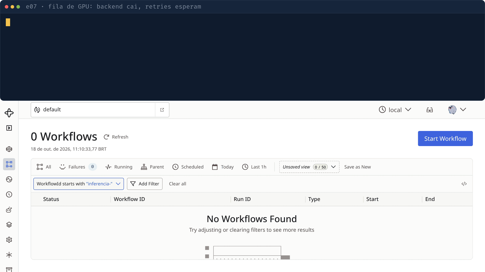
Versionamento: v1 → v2 no meio
o código muda no meio e o workflow segue
pythonbrasil 26
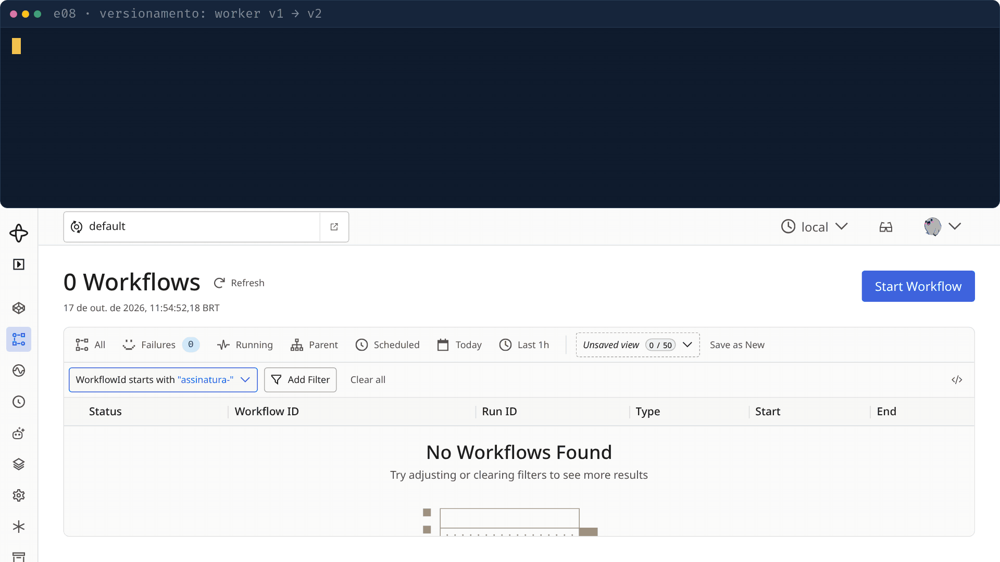
$ cat docs/roteiro-demo.md # extra · demos de reserva
Um comando por demo
# SAGA
make e03-worker · make e03-falha
# aprovação
make e04-worker · make e04-pedir
make e04-aprovar QUEM=ana # ❌ recusado: ana pediu o deploy
make e04-aprovar QUEM=bruno
# agente
make e06-worker · make e06
make e06-aprovar QUEM=bruno
# GPU · versões · benchmark
make e07-backend · e07-worker · e07
make e08-worker-v1 · e08 · e09-worker · e09
Sem Python na máquina: make docker-build && make docker-up · roteiro em docs/roteiro-demo.md
extra · fora da palestra principal
pythonbrasil 26
$ make x07 # extra (repo privado)
x07 · Agente com tools via MCP
Tools via MCP
servidor MCP stdio: status, alertas e reiniciar serviço
Modelo por env
AGENTE_MODELO = Claude, OpenAI ou Ollama; padrão offline
Ação perigosa
reiniciar_servico pede aprovação (Update + validador)
LLM caiu
AGENTE_FALHAS_LLM=1: o Temporal retenta sem pagar de novo
make x07-worker · make x07 · make x07-aprovar ID=...
pythonbrasil 26
x07 · Agente com tools via MCP
o agente chama tools de um servidor MCP
pythonbrasil 26
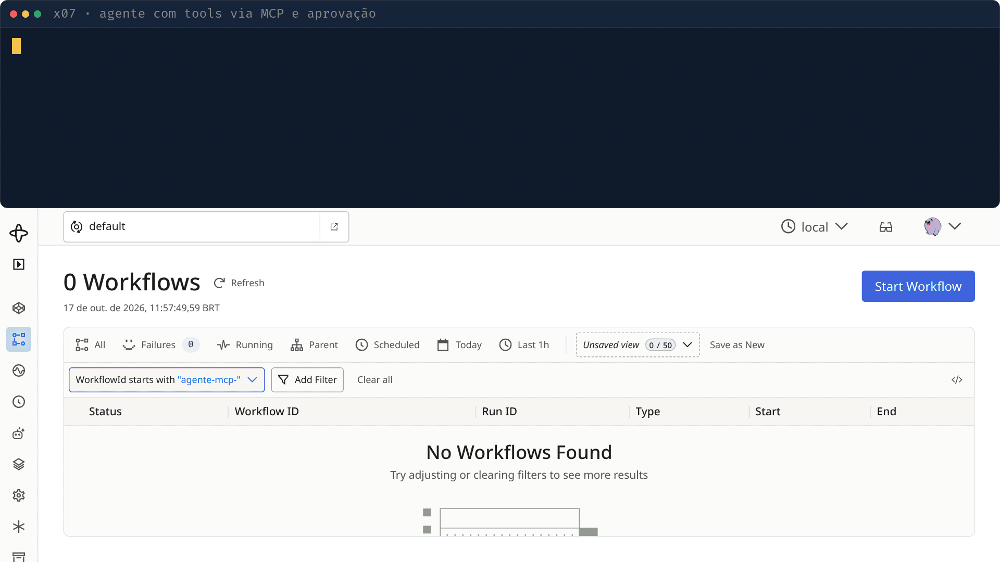
x07 · Agente com tools via MCP · Temporal UI
cada chamada ao LLM e às tools é uma activity
pythonbrasil 26
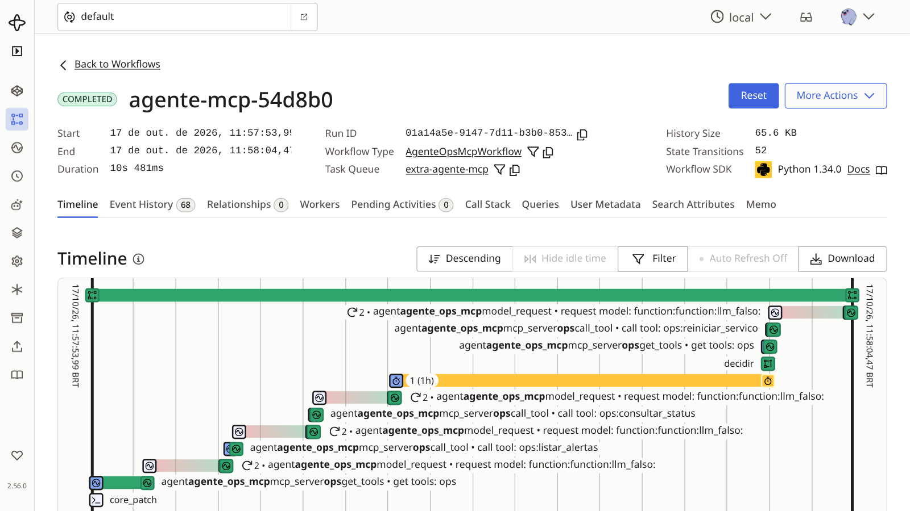
$ make x08 # extra (repo privado)
x08 · Coding agent (Claude Code / Codex)
CLI como activity
claude -p ou codex exec num diretório temporário, com heartbeat
Plano aprovado
humano aprova (Update) ou rejeita (Signal), com timeout
Testes em loop
pytest falhou? a saída volta para o agente, até 3 tentativas
Riscos
código do agente roda no worker: use container; a saída de teste é dado, não instrução
make x08-worker · make x08 · make x08-aprovar ID=...
pythonbrasil 26
x08 · Coding agent (Claude Code / Codex)
o coding agent roda como activity
pythonbrasil 26
x08 · Coding agent (Claude Code / Codex) · Temporal UI
a execução do agente no histórico
pythonbrasil 26
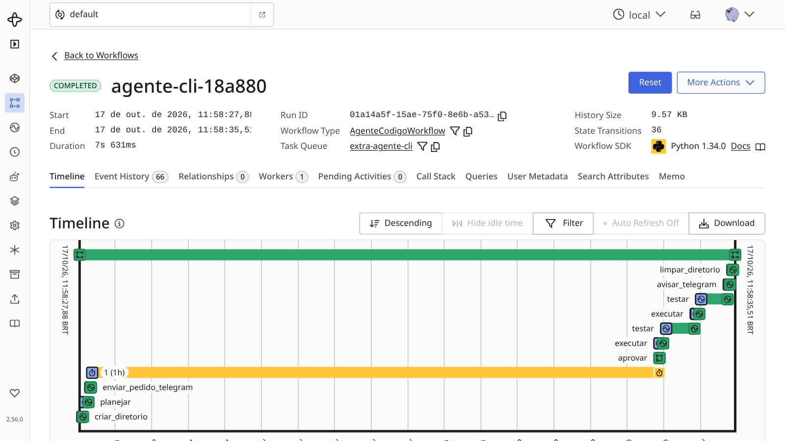
$ make x09 # extra (repo privado)
x09 · Aprovação pelo Telegram
Botões no chat
activity envia ✅/❌ com o workflow_id no callback
Ponte
getUpdates → Update decidir; só o chat (e aprovadores) configurados
Sem Telegram
faltando o token, aprova com make x09-aprovar
Segurança
token nunca no log; logger do httpx em WARNING
make x09-worker · make x09-ponte · make x09 · make x09-aprovar ID=...
pythonbrasil 26
x09 · Aprovação pelo Telegram
a aprovação chega por botões no Telegram
pythonbrasil 26
x09 · Aprovação pelo Telegram · Temporal UI
o workflow recebe o Update da aprovação
pythonbrasil 26
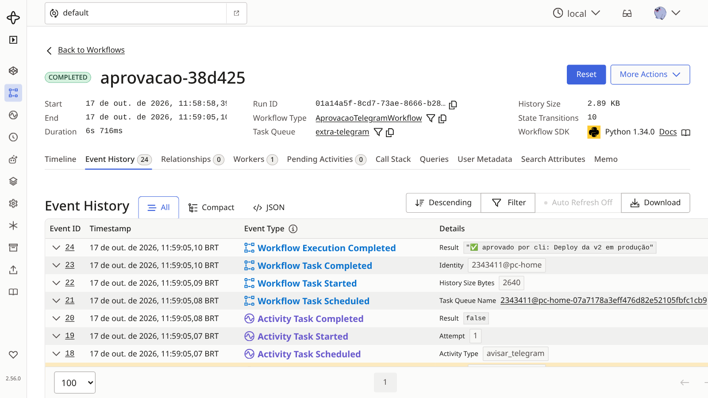
Temporal UI · Timeline com filhos
um pai dispara child workflows em lotes
pythonbrasil 26
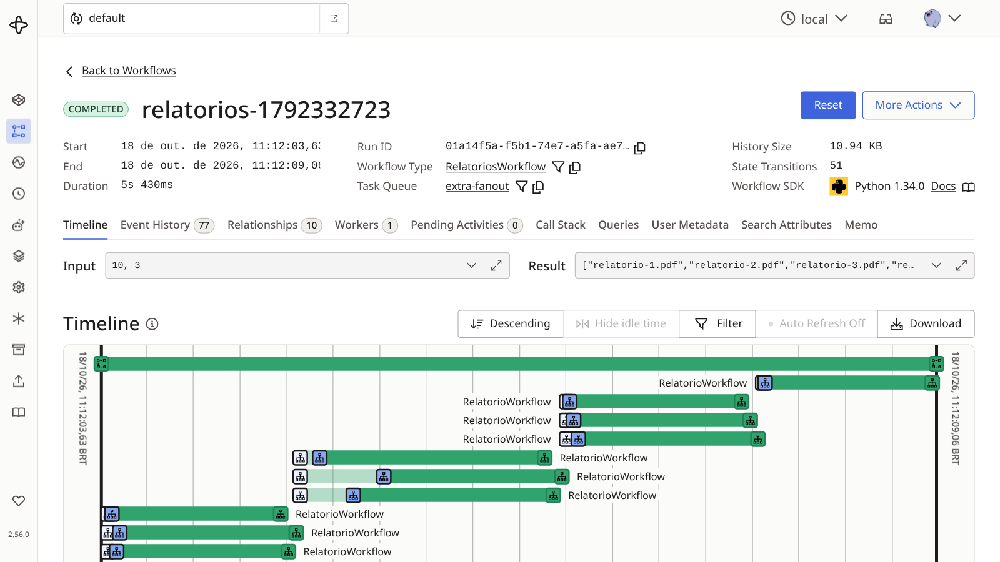
Temporal UI · Relationships
o workflow pai e os filhos
pythonbrasil 26
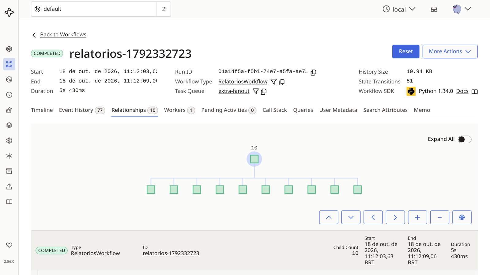